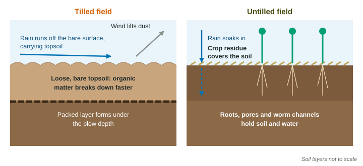

Farming feeds the world, and almost every farming practice changes the land and water around it. This page looks at three common practices, tilling, slash-and-burn and heavy fertilizer use: why farmers use each one, and what each one costs.
Tilling
Tilling (plowing or disking) turns the soil over before planting. It buries weeds and the leftovers of the last crop, loosens the soil so seeds can be planted evenly, and warms the soil in spring. Those are real benefits. The costs build up year after year:
- Erosion. A plowed field is bare and loose. Wind lifts the fine particles, and rain runs off the surface carrying topsoil with it.
- Loss of organic matter. Turning the soil mixes in air, so decomposers break down organic matter faster. Its carbon leaves as carbon dioxide, and the soil holds less water and fewer nutrients.
- Compaction. Heavy machines and the plow blade press a hard layer just below the plow depth, which slows water from soaking in and roots from growing down.

The Dust Bowl of the 1930s is the classic case. Farmers had plowed up the deep-rooted prairie of the southern Great Plains. When years of drought came, the loose, dry soil blew away in huge dust storms, and many farms were ruined.
Slash-and-burn
Slash-and-burn farming clears a patch of tropical forest by cutting the plants (the slash) and burning them. Rainforest soil is thin and poor, because heavy rain leaches nutrients away and most nutrients are held in the living plants. Burning releases those nutrients as ash, which fertilizes the soil for a few seasons. When the nutrients are used up or washed out, the farmer leaves the plot and clears another. With few people and long fallow periods, the forest grows back on the old plots, and the system can last for centuries. With more people, plots are cleared again before they recover, and the forest shrinks.
Costs: the fires release carbon dioxide (the carbon stored in the plants) and smoke; habitat for forest animals is removed; bare soil erodes in the heavy rain; and the burned plot holds far fewer species than the forest it replaced.
A family farms each plot for 3 years and then lets it regrow for 15 years. How much land does it need to farm 2 hectares every year?
Each plot spends years in the cycle and is farmed in 3 of them, so the family needs hectares in all. Shorten the fallow to 6 years and it needs only hectares, but each plot gets less time to recover.
Fertilizer
Synthetic fertilizer supplies the limiting nutrients, mostly nitrogen and phosphorus, and raises yields quickly. The problem is the part the crop does not take up. Nitrate dissolves easily in water, so it washes off fields in runoff and leaches down into groundwater. Phosphate tends to stick to soil particles and travels with eroded soil. In rivers and lakes both feed fast growth of algae, which you will follow step by step in a later unit; in wells, nitrate is a drinking-water pollutant, especially for babies.
A farmer applies 150 kg of nitrogen per hectare to a 60-hectare field, and the crop takes up 90 kg per hectare. How much nitrogen is left over?
Setup:
Comparing the three practices
| Practice | Why farmers use it | Main costs |
|---|---|---|
| Tilling | buries weeds, loosens and warms the seedbed | erosion by wind and water, loss of organic matter, a packed layer, carbon dioxide release |
| Slash-and-burn | clears land cheaply; ash fertilizes poor soil | loss of forest and habitat, carbon dioxide and smoke, erosion, short-lived fertility |
| Synthetic fertilizer | supplies limiting nutrients, raises yield fast | nitrate and phosphate in rivers, lakes and wells; fossil fuel to make it |
Later in this unit you will see farming methods that keep most of the yield while cutting these costs.